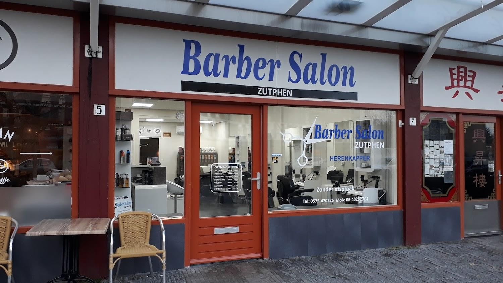
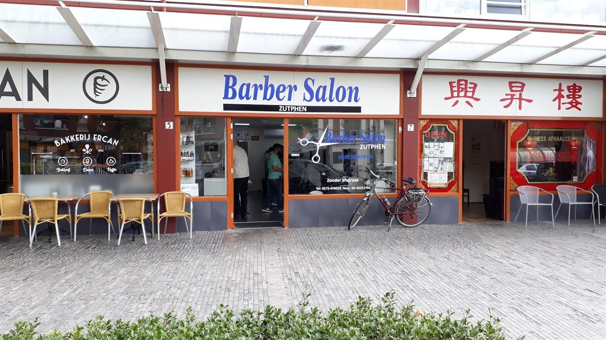

★★★★★
Altijd fijn om hier naar de kapper te gaan. Kom hier al jaren. Altijd goede service met een lach, kop thee en strak kapsel bij vertrek.
Drikus
Herenkapper in Zutphen. Loop binnen, drink een kop koffie, en ga strak geknipt weer verder.
De deur staat open. Geen agenda, geen app, geen wachtlijst. Je meldt je gewoon even.
Meestal ben je snel aan de beurt. Is het druk, dan schenken we wat in terwijl je wacht.
Knippen, baard bijwerken, scheren. Netjes afgewerkt, en je staat zo weer buiten.
De meeste kappers gaan om negen uur open. Hier kun je er al om acht uur in, zes dagen per week.
Een greep uit de 191 reviews op Google.
Altijd fijn om hier naar de kapper te gaan. Kom hier al jaren. Altijd goede service met een lach, kop thee en strak kapsel bij vertrek.
DrikusPrettige kapper, je hoeft vaak niet lang te wachten om geknipt te worden. Ook altijd netjes en vlot geknipt.
Ronald, Local GuideGoede service en top klantvriendelijkheid. Salon ziet er super netjes uit. Kortom ik zeg super zaak.
Tony Ticheler van KlingerenSnel aan de beurt. Het fijne is zonder afspraak, goede kappers.
Via Google
Bellen hoeft niet, maar het mag. Loop gerust binnen tijdens openingstijden.